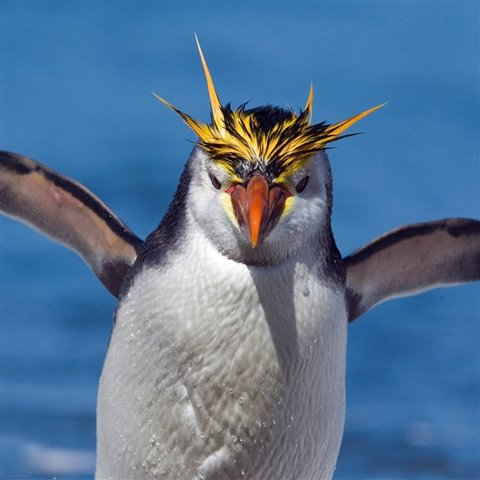

Los pingüinos son aquellas aves que se engloban dentro
de la familia Spheniscidae y a su vez dentro del
orden de los Sphenisciformes.
Se trata de un grupo de aves marinas no voladoras, en el
que se pueden diferenciar hasta 18 especies diferentes las
cuales que se distribuyen -exceptuando el pingüino de las islas
Galápagos- exclusivamente en el Hemisferio Sur.

A pesar de que no pueden volar, son grandes nadadores, por
ello sus aletas se han adaptado al medio acuático, donde pueden
llegar a alcanzar los 50 km/h. La cola les ayuda a mantener
el equilibrio cuando caminan por tierra, y también pueden
deslizarsepor el hielo para ahorrar energía.